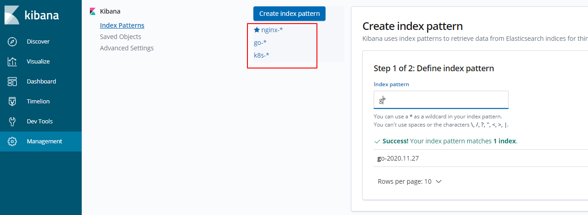
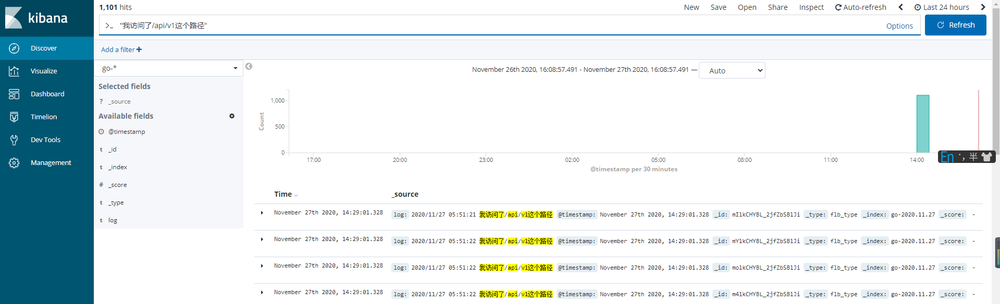
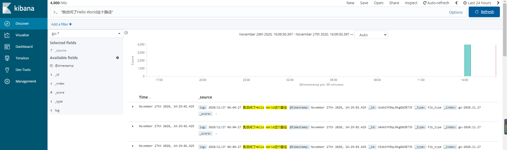
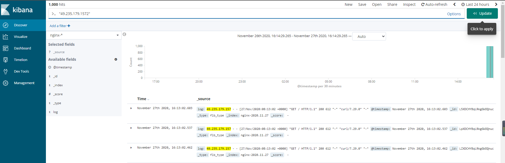
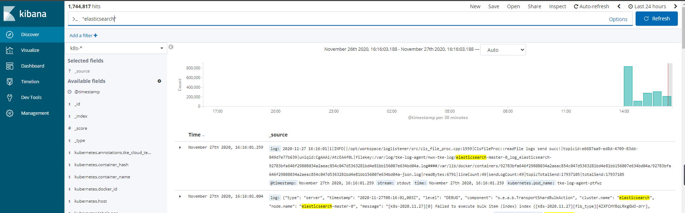

我们将服务部署在k8s中，通常需要收集业务日志进行分析，那么现在常用的日志采集是怎么做的呢，一般来说是搭建EFK系统来采集日志，今天我们来说说如何采集k8s中的不同业务日志然后投递到es不同的索引，然后通过kibana进行分析和查看。
对于EFK的搭建，我们这里不做具体的讲解，大家可参考 https://www.niewx.cn/tke/kubernetes/log/2020/06/10/TKE%E4%B8%8A%E6%90%AD%E5%BB%BAEFK%E6%97%A5%E5%BF%97%E9%87%87%E9%9B%86%E7%B3%BB%E7%BB%9F/ , 今天我们主要来讲一下如何采集不同业务日志进行分析。
这里我们一共采集3类日志，分别是nginx日志、golang的日志、以及k8s的系统日志，一般我们采集的业务日志都是将业务日志挂载到节点，然后fluent-bit去采集节点上的日志文件，输出到es，通过kibana展示和查询。
fluent-bit的部署 我们这里简单说下fluent-bit的部署,我们通过helm部署。
1 $ helm install --name my-release stable/fluent-bit
部署应用 部署nginx 我们将nginx的日志挂载到节点的/data/nginx目录下，对应的yaml如下
1 2 3 4 5 6 7 8 9 10 11 12 13 14 15 16 17 18 19 20 21 22 23 24 25 26 27 28 29 30 31 32 33 34 35 36 37 38 39 40 41 42 43 44 45 46 47 48 49 50 51 52 53 54 55 56 57 58 59 60 61 62 63 64 65 66 67 68 69 70 71 72 73 74 75 76 77 78 79 80 81 apiVersion: apps/v1 kind: Deployment metadata: annotations: deployment.kubernetes.io/revision: "1" creationTimestamp: "2020-11-24T02:08:08Z" generation: 1 labels: k8s-app: nginx-log qcloud-app: nginx-log managedFields: - apiVersion: apps/v1 manager: tke-apiserver operation: Update time: "2020-11-24T02:08:08Z" - apiVersion: apps/v1 manager: kube-controller-manager operation: Update time: "2020-11-27T03:21:32Z" name: nginx-log namespace: test resourceVersion: "2156061896" selfLink: /apis/apps/v1/namespaces/test/deployments/nginx-log uid: eb42b8f7-97f7-405b-a750-d46df6bcd8c6 spec: progressDeadlineSeconds: 600 replicas: 1 revisionHistoryLimit: 10 selector: matchLabels: k8s-app: nginx-log qcloud-app: nginx-log strategy: rollingUpdate: maxSurge: 1 maxUnavailable: 0 type: RollingUpdate template: metadata: creationTimestamp: null labels: k8s-app: nginx-log qcloud-app: nginx-log spec: containers: - image: nginx imagePullPolicy: Always name: nginx-log resources: limits: cpu: 500m memory: 1Gi requests: cpu: 250m memory: 256Mi securityContext: privileged: false terminationMessagePath: /dev/termination-log terminationMessagePolicy: File volumeMounts: - mountPath: /etc/nginx/nginx.conf name: conf subPath: nginx.conf - mountPath: /var/log/nginx name: log dnsPolicy: ClusterFirst imagePullSecrets: - name: qcloudregistrykey restartPolicy: Always schedulerName: default-scheduler securityContext: {} terminationGracePeriodSeconds: 30 volumes: - configMap: defaultMode: 420 name: nginx-conf name: conf - hostPath: path: /data/nginx type: DirectoryOrCreate name: log
部署golang 我们将golang的日志文件挂载到节点的/data/go目录下，对应的yaml如下
1 2 3 4 5 6 7 8 9 10 11 12 13 14 15 16 17 18 19 20 21 22 23 24 25 26 27 28 29 30 31 32 33 34 35 36 37 38 39 40 41 42 43 44 45 46 47 48 49 50 51 52 53 54 55 56 57 58 59 60 61 62 63 64 65 66 67 68 69 70 71 72 apiVersion: apps/v1 kind: Deployment metadata: annotations: deployment.kubernetes.io/revision: "11" creationTimestamp: "2020-11-22T09:30:22Z" generation: 11 labels: k8s-app: go-test qcloud-app: go-test managedFields: - apiVersion: apps/v1 manager: tke-apiserver operation: Update time: "2020-11-27T05:47:59Z" - apiVersion: apps/v1 manager: kube-controller-manager operation: Update time: "2020-11-27T05:59:13Z" name: go-test namespace: test resourceVersion: "2161865161" selfLink: /apis/apps/v1/namespaces/test/deployments/go-test uid: b267fe91-c0c7-40a5-94e2-cd1d169576a3 spec: progressDeadlineSeconds: 600 replicas: 1 revisionHistoryLimit: 10 selector: matchLabels: k8s-app: go-test qcloud-app: go-test strategy: rollingUpdate: maxSurge: 1 maxUnavailable: 0 type: RollingUpdate template: metadata: creationTimestamp: null labels: k8s-app: go-test qcloud-app: go-test spec: containers: - image: nwx-test.tencentcloudcr.com/nwx/go-test:go-20201127 imagePullPolicy: Always name: go-test resources: limits: cpu: 100m memory: 256Mi requests: cpu: 100m memory: 256Mi securityContext: privileged: false terminationMessagePath: /dev/termination-log terminationMessagePolicy: File volumeMounts: - mountPath: /data/ name: vol dnsPolicy: ClusterFirst restartPolicy: Always schedulerName: default-scheduler securityContext: {} terminationGracePeriodSeconds: 30 volumes: - hostPath: path: /data/go type: DirectoryOrCreate name: vol
修改fluent-bit的配置文件和yaml 修改fluent-bit.conf 这里我们将fluent-bit.conf分成多个配置文件进行配置，你也可以配置到一个fluent-bit.conf
fluent-bit.conf配置项介绍 1 2 3 4 5 6 7 8 9 10 11 12 13 14 15 16 17 18 19 20 21 22 23 24 25 26 27 28 29 30 31 32 33 34 35 36 37 38 39 40 41 42 43 44 45 46 47 48 49 50 51 52 53 54 55 56 57 58 59 60 61 62 63 64 65 66 67 68 69 70 71 72 73 74 75 76 77 78 79 80 81 82 83 84 85 86 87 88 89 90 91 92 93 output-elasticsearch.conf : | [OUTPUT] Name es Match * Host ${FLUENT_ELASTICSEARCH_HOST} Port ${FLUENT_ELASTICSEARCH_PORT} Logstash_Format On Replace_Dots On Retry_Limit False Logstash_Prefix test_k8s env : - name: FLUENT_ELASTICSEARCH_HOST value : "es.haha.com" - name: FLUENT_ELASTICSEARCH_PORT value : "80" output-elasticsearch.conf : | [OUTPUT] Name kafka Match * Brokers ${FLUENT_KAFKA_ADDR} Topics ${FLUENT_KAFKA_TOPIC} Timestamp_Key @timestamp Retry_Limit false rdkafka.log.connection.close false rdkafka.queue.buffering.max.kbytes 10240 rdkafka.request.required.acks 1 env : - name: FLUENT_KAFKA_ADDR value : "es.haha.com" - name: FLUENT_KAFKA_TOPIC value : "test_k8s" [SERVICE] Flush 1 #buffer里的数据每隔1秒写到output插件里，这里写到ES里。 Log_Level info #fluent-bit的日志级别 Daemon off Parsers_File parsers.conf #指向了另外一个配置文件，里面配置所有的parser。 HTTP_Server On HTTP_Listen 0.0.0.0 HTTP_Port 2020 [INPUT] Name tail #指定了input插件的类型，这里是tail类型 Tag {{$Host}}_{{$ESIndex}}_{{.ContainerName}}_{{$i}} #给采集的日志打个标签，后面filter和output根据这个标签选择数据源 Path /var/log/pods/${POD_UID}/{{.ContainerName}}/*.log Path_Key filename Parser docker DB /var/log/pods/${POD_UID}/{{.ContainerName}}/flb_std.db#记录哪个文件采集到哪一行 DB.Sync Full #internal SQLite engine用哪种方法同步数据到磁盘，full为安全优先Key Mem_Buf_Limit 5MB #一旦buffer里的数据超过Mem_buf_limit，tail就会暂停采集，直到buffer数据被flush到output Skip_Long_Lines Off #跳过长度大于Buffer_Max_Size的行,默认On,不关闭会出现have long lines.Skipping long lines的错误 Buffer_Chunk_Size 32k #tail命令的buffer初始大小，具体作用和对性能的影响还需进一步研究 Buffer_Max_Size 32k #tail命令的buffer最大值，具体作用和对性能的影响还需进一步研究 Refresh_Interval 10 #定时扫描磁盘上的新文件的间隔 Rotate_Wait 5 #文件rotate后的等待一段时间后再继续监控这个文件，以防flush一些pending data Ignore_Older 10d #忽略近十天来未更改的文件 [FILTER] Name modify #插件的类型 Match * #匹配到任何数据源 Add node_name ${NODE_NAME} Add node_ip ${NODE_IP} Add pod_name ${POD_NAME} [OUTPUT] Name es #插件的类型 Match {{.Host}}_{{.ESIndex}}* #匹配到tag为{{.Host}}_{{.ESIndex}}*的数据源 Host {{.HostName}} #es的hostname 可以是域名和ip Port {{.Port}} #es的端口 Index {{.ESIndex}} HTTP_User {{.UserName}} HTTP_Passwd {{.Password}} Pipeline #不要用 Logstash_Format On #是否采用类似logstash的index，可以根据时间设置index名字 Logstash_Prefix logstash #索引名称的前缀 Logstash_DateFormat %Y.%m.%d #名称后缀格式 Time_Key tail-time #Logstash_Format enabled的时候，每条记录会新产生一个时间戳 Time_Key_Format %Y-%m-%dT%H:%M:%S #新时间戳的格式 Generate_ID On #对记录去重，可能有性能消耗。 Trace_Output Off #打印elasticsearch API calls 调试的时候用。 Logstash_Prefix_Key ttt # Retry_Limit 5 #传输失败后重试次数，默认为2，设置为False时，无限次重试
fluent-bit-filter.conf 日志过滤配置
1 2 3 4 5 6 7 8 9 10 [FILTER] Name kubernetes Match kube.* Kube_Tag_Prefix kube.var .log .containers. Kube_URL https: Kube_CA_File /var /run /secrets/kubernetes.io/serviceaccount/ca .crt Kube_Token_File /var /run /secrets/kubernetes.io/serviceaccount/token Merge_Log On K8S-Logging.Parser On K8S-Logging.Exclude On
日志源输入配置
1 2 3 4 5 6 7 8 9 10 11 12 13 14 15 16 17 18 19 20 21 22 23 24 [INPUT] Name tail Path /var/log/containers/*.log Parser docker Tag kube.* Refresh_Interval 5 Mem_Buf_Limit 5MB Skip_Long_Lines On [INPUT] Name tail Path /data/nginx/*.log Tag nginx.* Refresh_Interval 5 Mem_Buf_Limit 5MB Skip_Long_Lines On [INPUT] Name tail Path /data/go/*.log Tag go.* Refresh_Interval 5 Mem_Buf_Limit 5MB Skip_Long_Lines On
fluent-bit-output.conf 日志投递输出配置
1 2 3 4 5 6 7 8 9 10 11 12 13 14 15 16 17 18 19 20 21 22 23 24 25 26 27 28 29 30 [OUTPUT] Name es Match nginx.* Host elasticsearch-master Port 9200 Logstash_Format On Logstash_Prefix nginx Replace_Dots On Retry_Limit False [OUTPUT] Name es Match kube.* Host elasticsearch-master Port 9200 Logstash_Format On Logstash_Prefix k8s Replace_Dots On Retry_Limit False [OUTPUT] Name es Match go.* Host elasticsearch-master Port 9200 Logstash_Format On Logstash_Prefix go Replace_Dots On Retry_Limit False
fluent-bit-service.conf 日志读取配置
1 2 3 4 5 [SERVICE] Flush 1 Daemon Off Log_Level info Parsers_File parsers.conf
fluent-bit.conf fluent-bit的配置
1 2 3 4 @INCLUDE fluent-bit-service.conf@INCLUDE fluent-bit-input.conf@INCLUDE fluent-bit-filter.conf@INCLUDE fluent-bit-output.conf
parsers.conf 日志转换配置,这里暂未配置
修改fluent-bit的daemonset的yaml 我们在fluent-bit的配置文件中指定了日志源的的采集和输出，但是fluent-bit pod是无法获取节点的日志文件，我们需要将节点的文件挂载到pod进行采集。修改的挂载yaml文件如下,其实就是把/data/nginx和/data/go这2个目录挂载到fluent-bit的pod中，当然还有默认的k8s日志采集目录/var/lib/docker/containers和系统日志目录/var/log，只是这2个目录不用我们自己手动修改，默认yaml会配置这2个。
1 2 3 4 5 6 7 8 9 10 11 12 13 14 15 16 17 18 19 20 21 22 23 24 25 26 27 28 29 30 31 32 33 34 35 36 37 38 39 40 41 42 43 44 45 46 47 48 49 50 51 52 53 54 55 56 57 58 59 60 61 62 63 64 65 66 67 68 69 70 71 72 73 74 75 76 77 78 79 80 81 82 83 84 85 86 87 88 89 90 91 92 93 94 95 96 97 98 99 100 101 102 103 104 105 106 107 108 109 110 111 apiVersion: apps/v1 kind: DaemonSet metadata: annotations: deprecated.daemonset.template.generation: "3" creationTimestamp: "2020-11-24T05:12:12Z" generation: 3 labels: app: fluent-bit chart: fluent-bit-2.8.16 heritage: Helm release: nwx-fluent managedFields: - apiVersion: apps/v1 manager: Go-http-client operation: Update time: "2020-11-24T05:12:12Z" - apiVersion: apps/v1 manager: tke-apiserver operation: Update time: "2020-11-27T06:28:28Z" - apiVersion: apps/v1 manager: kube-controller-manager operation: Update time: "2020-11-27T06:29:01Z" name: nwx-fluent-fluent-bit namespace: log resourceVersion: "2162960999" selfLink: /apis/apps/v1/namespaces/log/daemonsets/nwx-fluent-fluent-bit uid: 62891a61-809c-4045-9f34-4b742cd8cc7c spec: revisionHistoryLimit: 10 selector: matchLabels: app: fluent-bit release: nwx-fluent template: metadata: annotations: checksum/config: a3e666db2b70ae3c1b8de003ce768a3ed14ff02dd643df16d2d6d2be111d3910 creationTimestamp: null labels: app: fluent-bit release: nwx-fluent spec: containers: - image: fluent/fluent-bit:1.3.7 imagePullPolicy: Always name: fluent-bit resources: {} securityContext: privileged: false terminationMessagePath: /dev/termination-log terminationMessagePolicy: File volumeMounts: - mountPath: /var/log name: varlog - mountPath: /var/lib/docker/containers name: varlibdockercontainers readOnly: true - mountPath: /etc/fluent-bit.conf name: config subPath: fluent-bit.conf - mountPath: /etc/fluent-bit-service.conf name: config subPath: fluent-bit-service.conf - mountPath: /etc/fluent-bit-input.conf name: config subPath: fluent-bit-input.conf - mountPath: /etc/fluent-bit-filter.conf name: config subPath: fluent-bit-filter.conf - mountPath: /etc/fluent-bit-output.conf name: config subPath: fluent-bit-output.conf - mountPath: /data/nginx name: nginx - mountPath: /data/go name: go dnsPolicy: ClusterFirst restartPolicy: Always schedulerName: default-scheduler securityContext: {} serviceAccount: nwx-fluent-fluent-bit serviceAccountName: nwx-fluent-fluent-bit terminationGracePeriodSeconds: 10 volumes: - hostPath: path: /var/log type: "" name: varlog - hostPath: path: /var/lib/docker/containers type: "" name: varlibdockercontainers - configMap: defaultMode: 420 name: nwx-fluent-fluent-bit-config name: config - hostPath: path: /data/nginx type: DirectoryOrCreate name: nginx - hostPath: path: /data/go type: DirectoryOrCreate name: go updateStrategy: rollingUpdate: maxUnavailable: 1 type: RollingUpdate
在kibana上创建索引检索日志 将上面的修改和部署都执行后，我们可以到对应的kibana上创建索引去搜索日志，这里我们已经对golang和nignx服务进行访问了，生成了一些日志
1 2 3 4 5 6 # 访问golang for i in {1. .100 }; do curl 172.16 .46 .161 :3000 /api/v1; donefor i in {1. .1000 }; do curl 172.16 .46 .161 :3000 /; done# 访问nginx for i in {1. .1000 }; do curl 106.55 .216 .xx; done
我们先查看下es的索引，看看nignx和golang的日志索引在不在
1 2 3 4 5 6 7 8 9 10 11 12 13 [root@ VM-0 -3 -centos go]# curl 172.16 .111 .218 :9200 /_cat/indices green open k8s-2020.11 .27 nOs7_AthSIGY6j_tODcdfA 1 1 1393033 0 632 mb 316 mb green open k8s-2020.11 .19 vUvvsjSSQy6r8VQeDSKZgw 1 1 6732 0 5.6 mb 2.8 mb green open nginx-2020.11 .27 LGjCjAW4Q3yJnGd-Y-_E8w 1 1 12172 0 4.4 mb 2.2 mb green open k8s-2020.11 .20 nQhDsyryS8aMfMwJCRAEKA 1 1 103524 0 34 mb 17 mb green open k8s-2020.11 .21 GHlg75nhRYqZTF3Z3p-D2Q 1 1 121832 0 37.5 mb 18.9 mb green open go-2020.11 .27 -jrQRrQOTGWxuiibaA-Fjg 1 1 5101 0 404.3 kb 203.2 kb green open k8s-2020.11 .22 B0QA301jRsu-Vmc6N4AD3Q 1 1 95367 0 29.1 mb 14.5 mb green open k8s-2020.11 .23 fPlbbGFBR3qiZGn4sAdDYQ 1 1 67689 0 20.8 mb 10.3 mb green open .kibana_1 6 DW_R-VvTwOlEvp8gISckA 1 1 4 0 71.2 kb 35.6 kb green open k8s-2020.11 .24 JHKRDHVWQqmIkvpxMFTa-w 1 1 124659 0 43.2 mb 21.7 mb green open k8s-2020.11 .25 JZ8WQTFnSSeOJRcW6mDl8w 1 1 66867 0 21.3 mb 10.6 mb green open k8s-2020.11 .26 FEvX7ZJlRammlS3xrqnqTQ 1 1 259974 0 175.9 mb 87.9 mb
这里查看到是有nginx和golang的日志索引的，下面我们去kibana创建一下index

我们分别创建nginx-、go- 、k8s-*分配来查询对应的业务日志
我们golang日志主要是存在2条类型日志“我访问了/api/v1这个路径”和“我访问了Hello World这个路径”，下面我们去检索下，看看能不能搜到


生成的日志我们都是可以搜索到的。
下面我们在49.235.179.157这个机器上对nginx的service进行访问，看看我们在日志能不能获取到49.235.179.157个客户端ip
1 for i in {1. .1000 }; do curl 106.55 .216 .xx; done

刚刚访问的记录我们也可以早上面搜索到
k8s的一些系统日志和其他pod日志，我们可以在k8s-*这个索引下进行检索，这里我们搜一下我们部署的es的pod日志

es的日志我们也可以在kibana上查找到
到这里，对于日志的采集，我们基本上就结束了，这里我们只要按照上面步骤进行挂载和配置，你就可以通过EFK采集到不同的业务日志，然后可以在kibana进行图标的制作和展示。
为正常使用来必力评论功能请激活JavaScript

This is copyright.